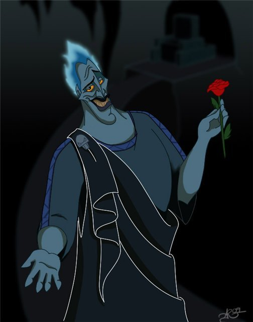

Аи́д (др.-греч. Ἀΐδης (Aides) или ᾍδης, или Га́дес; у римлян — Плуто́н, др.-греч. Πλούτων (Ploúton), лат. Pluto «богатый»; также Дит лат. Dis или Орк лат. Orcus[⇨]) в древнегреческой мифологии — верховный бог подземного царства мёртвых. Старший сын Кроноса и Реи[3], брат Зевса, Посейдона, Геры, Деметры и Гестии. Супруг Персефоны, вместе с ним почитаемой и призываемой.
